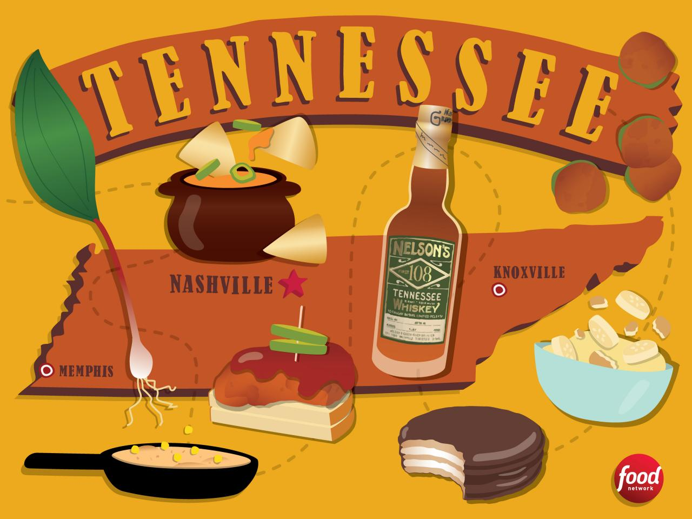

Welcome to TN

Did You Know?
Did you know that Tennessee is home to many popular foods consumed all around the world? That's right! Many famous food companies were also birthed right here in my hometown, Chattanooga, TN. Do you know any popular foods that origanted in Chattanooga? Ill give you a hint, it's a chocolate circle with marshmellows in the middle. If you said MoonPie that's right! Click the "about tab" to find reciepes along with brief history of the foods that make TN.